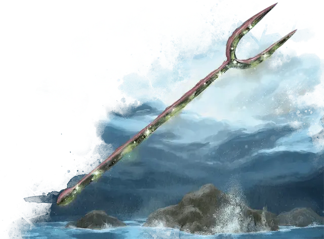

Декелла, двузубец Тассы
Dekella, Bident of Thassa
Оружие (трезубец), артефакт (требуется настройка)

Тасса владеет Декеллой, двузубым оружием, подаренным ей Пирфором. Если богиня моря дарует свое оружие смертному, то это зачастую делается для того, чтобы он мог исполнить её волю вдали от океана, исправляя некоторые ошибки, касающиеся тех, кому она предпочла бы не причинять вреда, или дать смертному понимание её огромных обязанностей.
Двузубец глубин. Фирменное оружие Тассы шумит ледяными течениями глубин океана. Это оружие функционирует как трезубец, который даёт бонус +3 к броскам атаки и урона, совершённым этим оружием. Когда вы попадаете атакой с помощью этого двузубца, цель дополнительно получает 2к10 урона холодом.
Благословение глубин. Если вы поклоняетесь Тассе, то вы получаете все следующие преимущества, для которых у вас есть необходимое значение благоволения:
Благоволение 10+. Вы можете дышать под водой и получаете скорость плавания 60 футов.
Благоволение 25+. Двузубец получает 1 случайно определяемое малое положительное свойство.
Благоволение 50+. Двузубец получает 1 случайно определяемое основное положительное свойство.
Если вы не поклоняетесь Тассе, то двузубец получает 1 малое отрицательное свойство и 1 основное отрицательное свойство, оба определяются случайно.
Повелитель глубин. Двузубец обладает силой повелевать волнами и их жителями. Действием вы можете изменить состояние моря в пределах 1 мили от вас, создавая сильный ветер и дождь, нагнетающие огромные волны, (см. «Море» в главе 5 «Руководства Мастера») или же, наоборот, успокаивая бурю. В любом случае изменённая погода длится 1 час, после чего возвращается к нормальной. Однажды использованное, это свойство двузубца не может быть использовано снова до следующего заката.
Кроме того, вы можете накладывать заклинание подчинение чудовища [dominate monster] (Сл спасброска 18) с помощью двузубца, но только на животных и монстров, которые имеют врождённую скорость плавания. Однажды использованное, это свойство двузубца не может быть использовано снова до следующего заката.
Водные метаморфозы. Вы можете накладывать заклинание истинное превращение [true polymorph] (Сл спасброска 18) с помощью двузубца, но вы должны накладывать его на существо только для превращения его в другое существо, обладающее врождённой скоростью плавания. Однажды использованное, это свойство двузубца не может быть использовано снова до следующего заката.
Уничтожение двузубца. Чтобы уничтожить двузубец, его необходимо нагреть дыханием древнего красного дракона [ancient red dragon], после чего, пока он ещё горячий, погрузить в реку Тартикс.